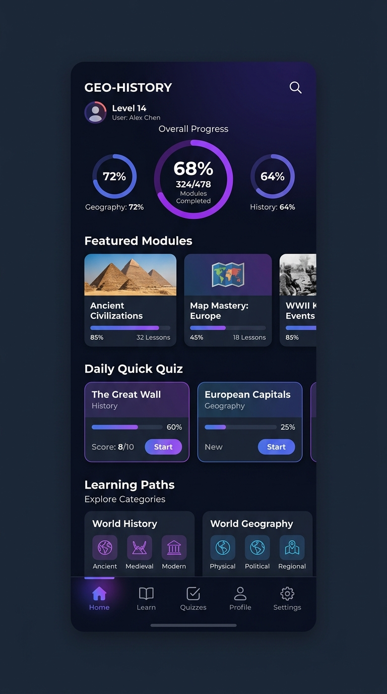

Bonjour, je suis
Flavio KOUGBADI
Étudiant en Informatique orienté Data & IA
Étudiant en fin de 1ère année à Epitech Bénin, je m'oriente vers la Data et l'IA. Polyvalent, je réalise également du développement web et de la conception d'applications mobiles avec l'aide de l'IA. J'aime automatiser les processus récurrents pour résoudre des problèmes concrets.
À propos de moi
Étudiant en fin de première année à Epitech Bénin, je m'oriente activement vers les domaines de la Data et de l'Intelligence Artificielle.
Polyvalent et autonome grâce à la pédagogie par projets (PBL), je réalise également du développement web et j'utilise l'IA pour créer des applications mobiles. Pour moi, coder doit servir à résoudre des problèmes concrets et non pas coder pour le simple fait de coder.
Très à l'aise avec la communication et le travail d'équipe, je suis orienté résultats et j'aime particulièrement concevoir des scripts en Python pour automatiser les tâches récurrentes.
Compétences
Data & IA
Orienté / DébutantPremiers pas en Data Science à travers la modélisation prédictive (Tardis), l'analyse de données historiques et l'initiation aux concepts de l'IA.
Python & Automatisation
AvancéDéveloppement de scripts d'automatisation pour optimiser les processus récurrents, manipulation de données et algorithmique.
Mobile & IA assistée
IntermédiaireConception et prototypage d'applications mobiles de A à Z (ex : Objectif Bac) assistés par des outils et API d'intelligence artificielle.
Développement Web
IntermédiaireConception d'interfaces web responsives, dynamiques et modernes orientées expérience utilisateur.
Langage C
AvancéBases solides en programmation système Epitech : gestion de la mémoire, pointeurs, appels système Unix.
Unix & Shell
AvancéScripting Shell (Bash), maîtrise complète de l'environnement Linux, Makefile, compilation et gestion de versions.
Certifications
Projets

my_hunter
Recréation du célèbre jeu vidéo Duck Hunt. Utilisation de la bibliothèque graphique CSFML pour la gestion des fenêtres, des sprites, des événements et des animations.

my_radar
Simulation 2D d'un système de radar de contrôle aérien avec de nombreux avions et tours de contrôle. Optimisation avec un Quadtree pour gérer efficacement les collisions.

Top
Recodage de la commande système top sous Linux. Parsing du dossier /proc pour récupérer en temps réel les informations sur les processus et les ressources système.

42sh
Développement d'un interpréteur de commandes Unix (shell) complet de A à Z. Implémentation des pipes, redirections, variables d'environnement et d'un éditeur de ligne avancé.

Tardis
Mon tout premier projet en Data Science : création d'un modèle prédictif de retards de train basé sur l'analyse de données historiques de la SNCF.

Objectif Bac
Application mobile développée de A à Z avec assistance de l'IA pour aider mon cousin à réviser ses cours d'Histoire-Géographie la veille du Baccalauréat.
Vault
Installation et configuration de serveurs SSH et multimédia sous Rocky OS, sécurisation avec Fail2ban et mise en place d'un reverse proxy Caddy.
Contact
Je suis à la recherche d'un stage pour consolider mes acquis et apporter ma valeur à votre équipe. N'hésitez pas à me contacter.
Dites bonjour